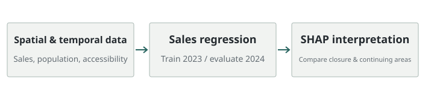

성수동 상권의 매출 구조와 폐업·지속 지역 비교
유동인구가 많은 지역이 반드시 매출도 높은지, 폐업과 지속 지역의 차이는 무엇인지 분석했습니다. 지역·시간별 데이터를 결합하고 매출 회귀 모델과 SHAP으로 상권 특성을 해석했습니다.
- 모델: 2023년 학습·2024년 평가의 매출 회귀
- 해석: SHAP으로 폐업·지속 지역의 기여 차이 비교


문제와 맥락
상권의 지속 가능성을 살피려면 유동인구 하나만으로 지역을 판단하기 어렵습니다. 카드 매출, 인구 구성, 접근성, 사업체 현황을 함께 보며 지역별 매출 구조를 비교하는 것이 프로젝트의 문제였습니다.
공개 분석 코드의 예측 대상은 일별 매출입니다. 폐업 여부는 설명 변수와 비교 집단으로 사용하며, 미래 폐업을 직접 예측하는 분류 모델로 소개하지 않습니다.
수행 역할
이도현·탁승연·이희준의 팀 프로젝트에 참여해 데이터 전처리와 분석 코드를 작성했습니다. 프로젝트는 2024 성동구 빅데이터 펠로우십 우수상을 받았습니다.
접근 방법
지역과 시간 기준으로 데이터 결합
250m 격자를 기준으로 카드 매출, 연령·성별 유동인구, 사업체 정보, 대중교통 접근성 및 날씨를 정리했습니다. 서로 다른 자료를 같은 지역과 날짜에서 비교할 수 있도록 전처리했습니다.
매출 회귀와 시간 분리 검증
공개 분석 스크립트는 2023년 자료를 학습에, 2024년 자료를 평가에 사용합니다. 입력 스케일러는 학습 데이터에만 맞추고 평가 데이터에는 같은 변환을 적용합니다. 매출에는 log1p 변환을 적용하고 예측을 원래 단위로 복원해 평가합니다.
XGBoost 회귀 모델을 이용해 RMSE, MAE, MAPE, SMAPE, R²를 계산합니다. 전체 자료뿐 아니라 폐업 지역과 지속 지역을 구분해 오차를 확인합니다.
SHAP으로 집단 차이 해석
TreeExplainer로 변수의 예측 기여를 계산하고, 폐업·지속 집단의 평균 SHAP 차이를 비교했습니다. 변수의 중요도와 두 집단에서 기여 방향이 어떻게 달라지는지를 함께 살폈습니다.
적용 범위
분석에서 유동인구가 많아도 매출이 반드시 높지는 않았습니다. 고객 연령 구성과 접근성을 함께 고려해 지역별 매출 구조를 해석했습니다. 관측 자료에 기반한 분석으로, 특정 요인의 인과 효과를 검증한 결과는 아닙니다.
분석 범위는 지역별 매출 회귀와 폐업·지속 지역의 비교입니다. 정책 적용 성과는 평가 범위에 포함하지 않았습니다.